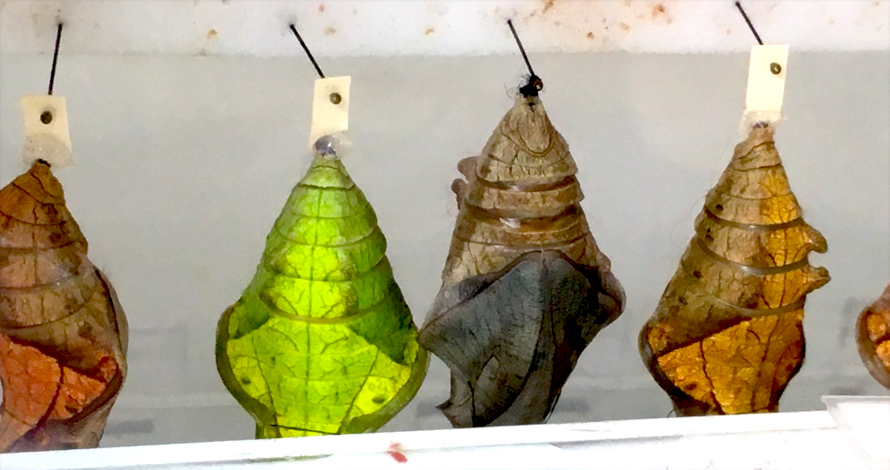

Sketching (and photographing) something changes the way I see it. Check out the image below.

Do you see the caterpillar's legs and body segments (ie. what makes up the chrysalis)!? It's particularly pronounced in the brown chrysalis on the right.
I "knew" the steps of insect development from science class, but when I actually looked at a chrysalis to photograph it, I saw that it is the caterpillar! Seeing the legs and the body segments has changed the way I know how a caterpillar becomes a butterfly (ie. it dangles upside down from a surface, becomes totally paralyzed and stuck to itself, it's body parts change, and after a while it sheds itself and molts into a butterfly. It is the butterfly!)
I'm particularly excited about the idea of drawing/photographing an animal (eg. butterflies, amphibians, etc.) throughout the course of it's development to understand metamorphoses more deeply. I could imagine using pencils and paper, watercolor, and/or digital drawing tools (eg. paper) to make an interactive digital story or a printed book. If it's interesting to you, we could observe and document the development of a particular set of animals and/or plants.
This book about bird development took twelve years to make but I think it's a beautiful example of someone who used sketching and watercolor to document animal development in new ways.
If you're interested in bringing art to life in new ways, I could imagine using digital tools to animate sketches (like this butterfly...I drew it in the paper app and animated it with some code).
Click on this fern leaf to see the first sketch-based, digital story that I made as a gift for a friend. It is fantastical social commentary with a children's book aesthetic. It's not about animals or plants but I'm sharing it because it's a different way of telling a story.
After clicking on the fern leaf, you'll go to the "preface" to the story. Click on the blue link on the first page and the yellow gears on the subsequent pages.
When you get to the story itself, click on any image and it will bring up clouds with quotes in them. Each cloud is a link to a website related to the quote.